Toxina botulínica
Indicada para linhas de expressão da testa e ao redor dos olhos, com dose planejada para cada rosto.
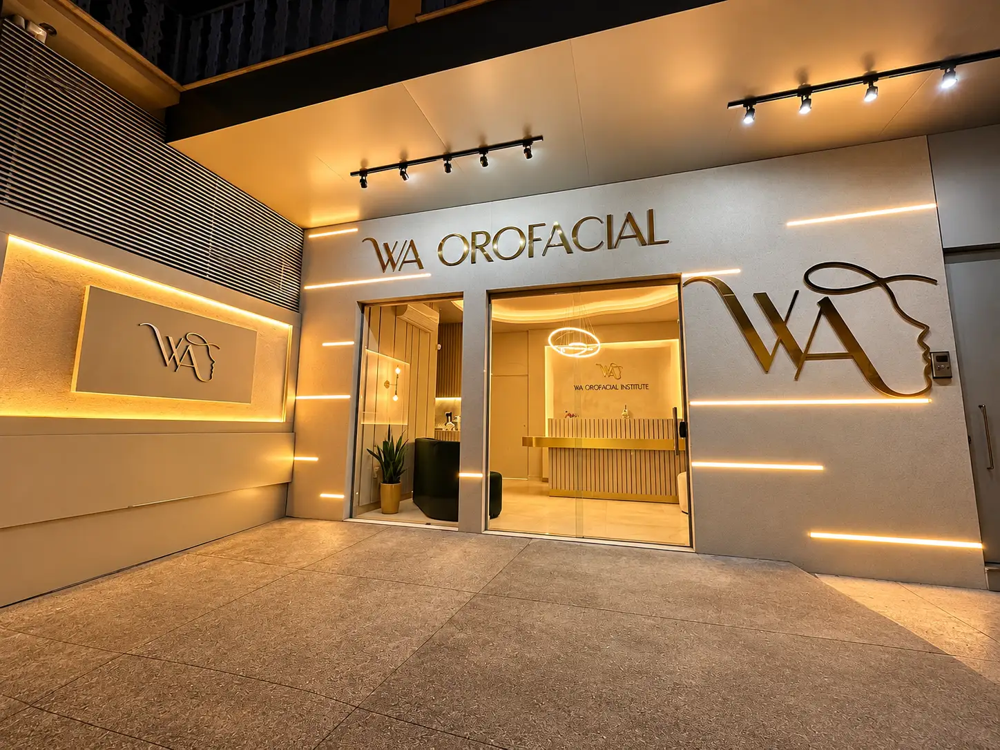
Odontologia e harmonização facial com a Dra. Welleynne Ananda Dias e uma equipe que cuida de você do primeiro contato ao pós-atendimento.
5,0 no Google · 26 avaliações
Na WA, a missão é transformar vidas com qualidade e dedicação, criando sorrisos e autoestima. Odontologia e harmonização facial caminham juntas aqui, sempre a partir de quem você é.
Antes de qualquer procedimento, vem a conversa: o que incomoda você e o que faz sentido no seu caso.
Hora marcada e acompanhamento antes e depois de cada consulta.
Sala de radiografia e central de esterilização dentro da própria clínica.
Recepção aconchegante, cantinho do café e ambientes pensados para o seu conforto.
Tudo começa com uma avaliação. A partir dela, o plano é montado para você, com o que faz sentido para o seu rosto e para o seu sorriso.
Procedimentos planejados a partir dos seus traços, respeitando quem você é.
Indicada para linhas de expressão da testa e ao redor dos olhos, com dose planejada para cada rosto.
Contorno e volume dos lábios, em proporção com o restante do rosto.
Avaliação e tratamento das olheiras e da região ao redor dos olhos.
Queixo, mandíbula e proporções do rosto, pensados em conjunto.
Do cuidado de rotina ao sorriso novo, com estrutura completa dentro da clínica.
Forma, cor e alinhamento dos dentes redesenhados com resina, planejados junto com você.
Consultas, limpeza e prevenção para manter a saúde da boca em dia.
Sala própria de raio X: o exame é feito ali mesmo, sem sair da clínica.
Central de esterilização com autoclave e materiais selados em embalagem individual.
Casos de pacientes da WA, publicados pela própria clínica. Arraste a linha sobre cada foto para comparar.
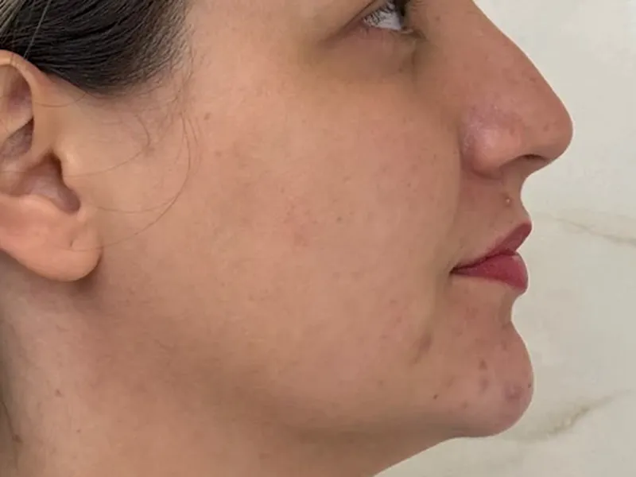
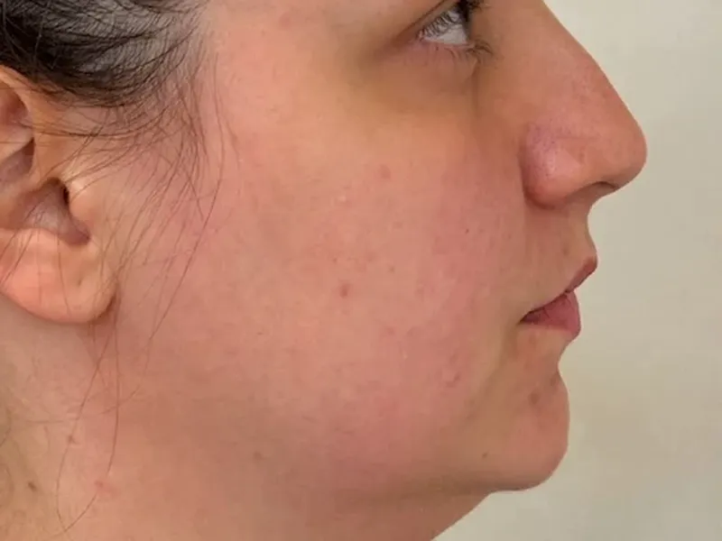
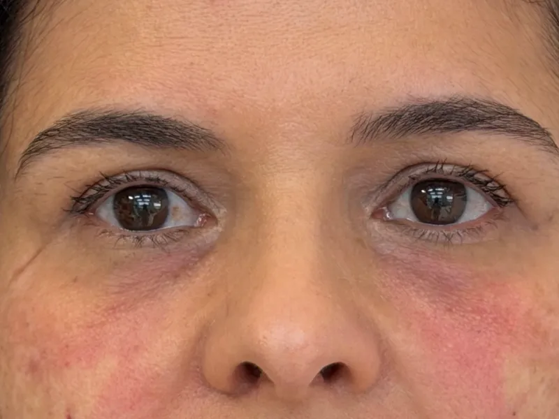
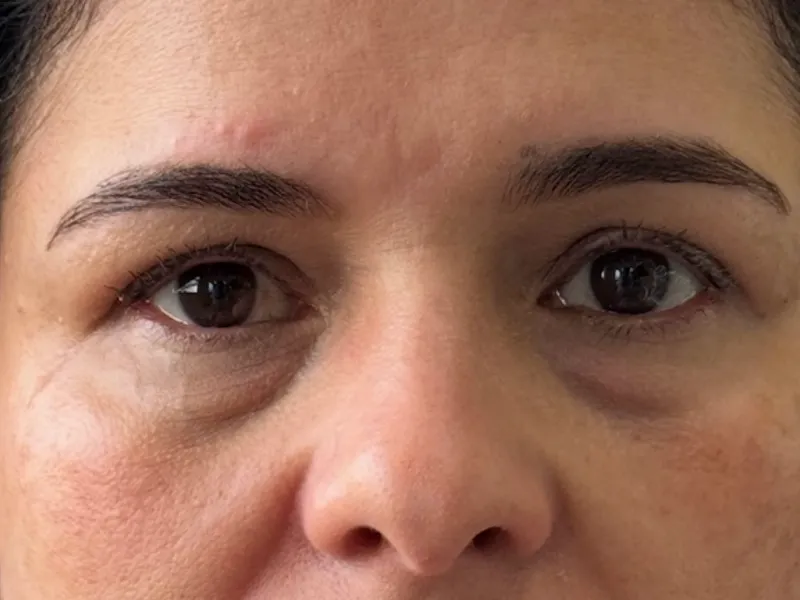
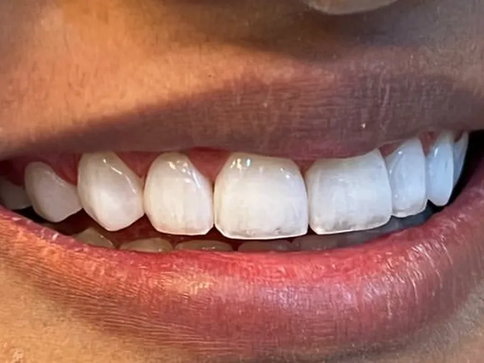
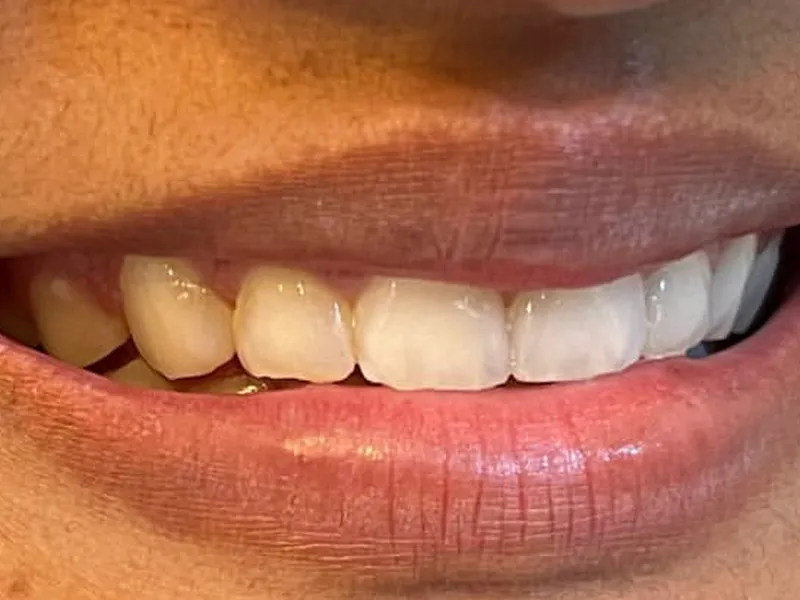
Resultados variam de pessoa para pessoa e dependem de avaliação individual. Responsável técnica: Dra. Welleynne Ananda Dias, CRO-MG 54413.
Da fachada iluminada ao consultório, cada ambiente foi pensado para receber você com conforto e privacidade.
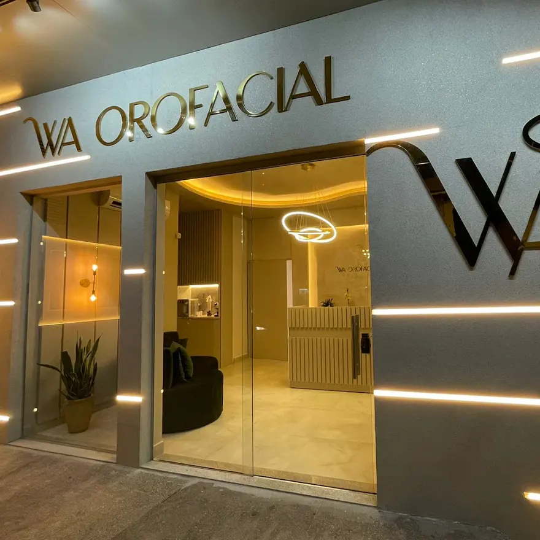
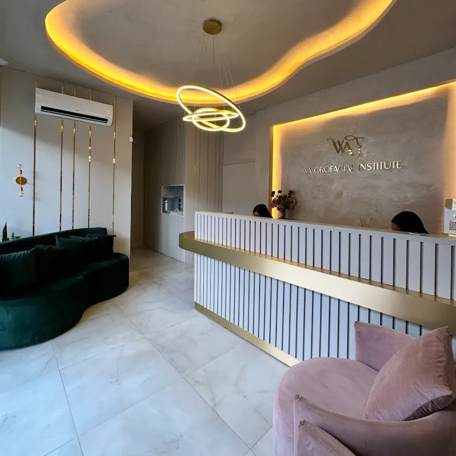
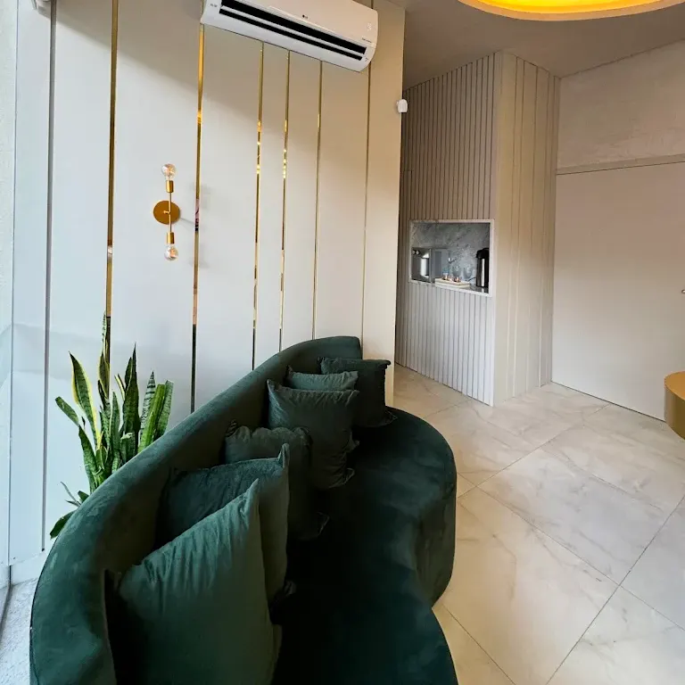
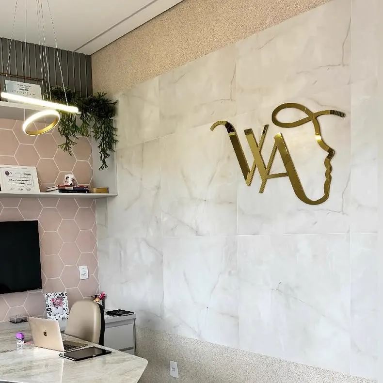
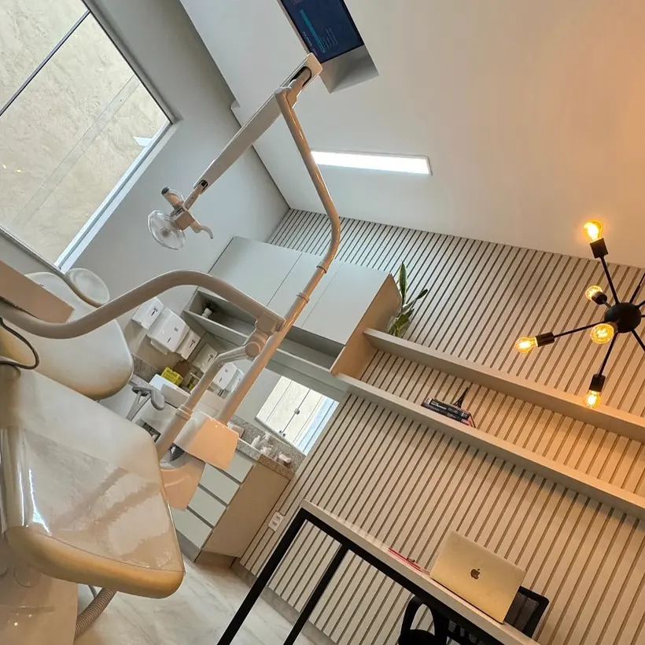
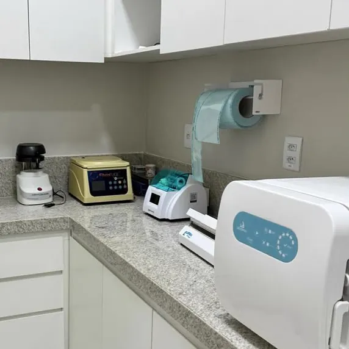
Cirurgiã-dentista · CRO-MG 54413
Harmonização facial sem perder a essência.
Dra. Welleynne, na apresentação do perfil dela no Instagram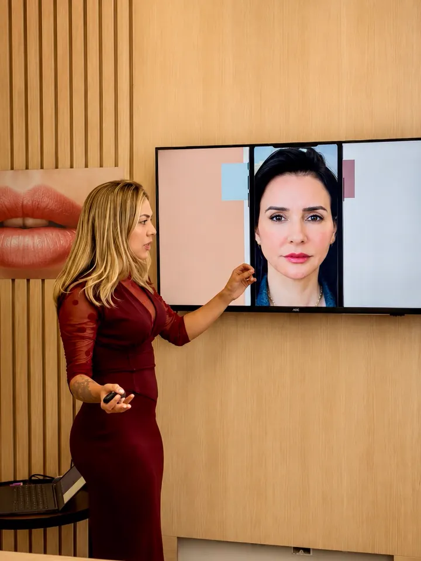
A WA cresce, evolui e segue reunindo profissionais que compartilham do mesmo propósito. Conheça quem cuida de você ao lado da Dra. Welleynne.
Esteticista
Responsável pelos atendimentos de estética da clínica.
Fisioterapeuta dermatofuncional
Responsável pelo tratamento de redução progressiva dos pelos.
Equipe de harmonização
Auxilia nos procedimentos de harmonização, proporcionando ainda mais conforto para você.
Ser cuidada pela WA é ter o privilégio de ser mimada, ser bem amparada não só dentro do consultório mas antes da consulta e no pós também. Equipe preparada (…) desde a recepção até os dentistas. Sou paciente há mais de 3 anos.
Desde a recepção até os procedimentos, tudo foi conduzido com muita atenção, profissionalismo e cuidado. Um elogio especial à Dra. Welleyne, que é extremamente competente, detalhista e acolhedora.
Excelente espaço... o profissionalismo e qualificação dos profissionais é o grande diferencial. Um lugar que acolhe a gente desde o atendimento até o pós procedimento.
Desde o atendimento inicial, fui tratada com muito profissionalismo e cuidado. A equipe foi atenciosa, explicou todo o processo de forma clara e me deixou muito confortável durante cada etapa.
Clínica perfeita. Ótima estrutura, e ótimos profissionais. Estou bem realizada com todos os procedimentos que já precisei fazer na clínica.
O local é impecável, o atendimento é excelente, todo mundo muito profissional e simpático. Recomendo!!!
Local lindo e aconchegante, equipe extremamente simpática e profissional.
Atendimento humanizado, de ótima qualidade.
Bastidores, casos e novidades da WA, publicados no perfil oficial da clínica.
Pelo WhatsApp (31) 3840-3975, que é o mesmo número do telefone da clínica. O atendimento é de segunda a sexta, das 8h30 às 19h, e aos sábados, das 9h às 13h.
Sim. Os dois atendimentos acontecem no mesmo endereço, com sala de radiografia e central de esterilização dentro da própria clínica.
Tem. Entrada, banheiro e estacionamento são acessíveis para cadeira de rodas.
A Dra. Welleynne Ananda Dias, cirurgiã-dentista inscrita no CRO-MG sob o número 54413.
Na Rua Armindo Costa Lage, 138, bairro Major Lage de Baixo, em Itabira/MG. A fachada tem o letreiro dourado da WA, aceso à noite.
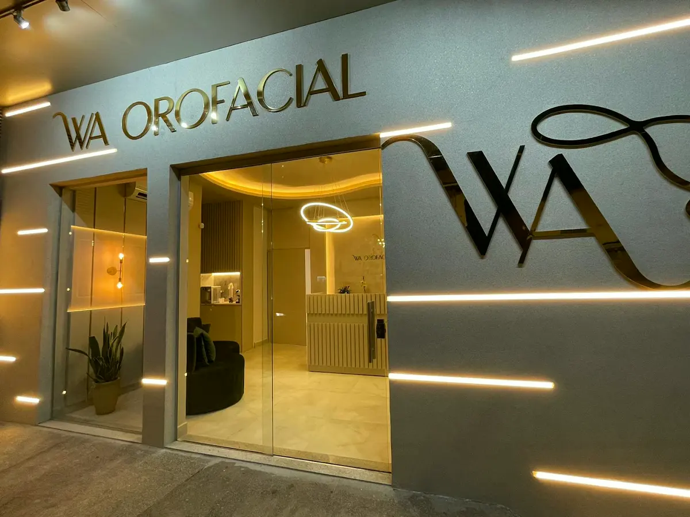